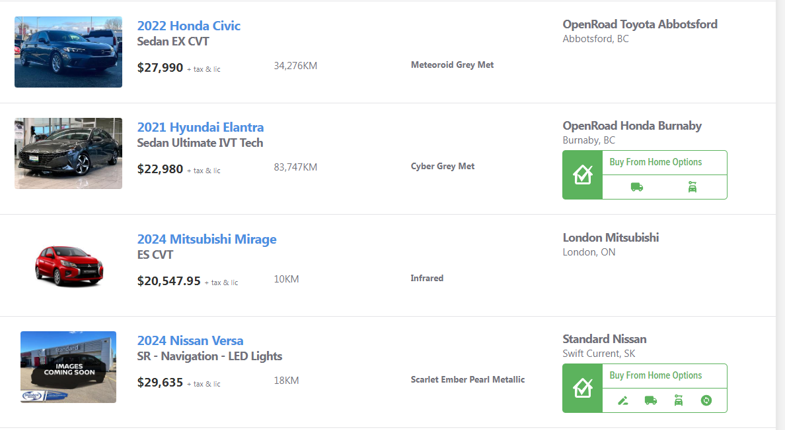
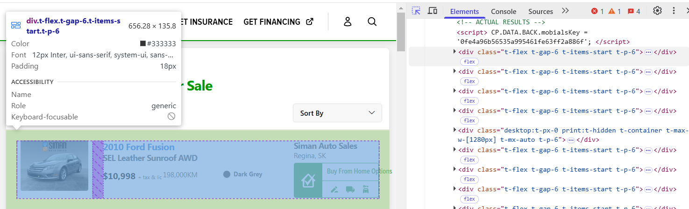

Vehicle Web Scraper

A simple webscraper project that takes car listing data from canadian used car websites. Click on the image to learn more!
With the rise of inflation caused by the aftermath of the COVID-19 pandemic, there has been a noticible change in the price of common day to day goods throughout the world. One sector of interest affected by inflation was the car market, especially the used car market in particular. Suggested causes for the used car market inflation were as follows:
To better understand the effects of inflation, I decided to scrape used vehicle listing information from popular used car websites such as carpages.ca
Using a webscraper I created, I collected data on approximately 5000 car listings on carpages.ca. In this section I will be mainly analyzing the data, in the subsequent section for those interested, I will show how I created the webscraper.
As expected we can see that Ontario has most of the car listings, additionally despite Québec being the second most populous province in Canada, it has no representation on carpages.ca. This does make sense as Québec typically has its own francophone equivalents such as autohebdo.net.
Given that the majority of car listings are located in Ontario, it's no surprise that the majority of car listings are not only located in Ontario, but are also located within the GTA (Greater Toronto Area). In fact we can see that 7/10 of the most common cities are in Ontario with 4/10 of them being within the GTA.
The median prices of sedans in each of the provinces are reflective of their respective cost of living (CoL). Since BC has been known to have higher CoL it has a higher median sale value of sedans, likewise AB which has known to have a lower CoL has a lower median value for vehicles.
When looking at the median prices located in each of the cities we can see that within the GTA there is a major price discrepancy we can see that North York has a significantly lower median price, as a result it may be worthwhile for GTA owners to buy in North York, and sell in Brampton. Although this sample is only based off of data collected from one session it does suggest that consumers could potentially expect big savings by exploring neighboring vicinities, especially in the GTA where we see the price difference between North York and Brampton.
Finally looking at the proportion of car makes, we can see that most vehicles being sold are from asian manufacturers such as Honda, Hyundai, and Toyota. For those who are knowledge on car brands this isn't too suprising as vehicles from these brands have been known to be durable and as a result are attractive when buying used vehicles.
In this section I'll be showing how I will source the data as well as using python to create the scripts to scrape the data with. If you just want to have a look at the end result it can be found here in this github repository.
When webscraping we first need to consider where we will source our data from. Since I'm situated in Canada, I'm interested in sourcing data from Canadian car websites. Using some basic googling the most common sites are:
Personally, since I use python the main libraries we can use to obtain the data are:
When considering each site we have to see if it's possible to actually access the site. This can be done using the requests library and ensuring the status code of the requests is 200. If you're webscraping and you get a code other than 200 you may need to consider using an alternate scraping method such as say Selenium instead of Bs4.
import requests
website = "https://www.carpages.ca/used-cars/search/?category_id=5"
response = requests.get(website)
status = response.status_code
print(status)Lets look at a sample of car listings on carpages.ca.
We can see that each listing contains the following useful information.
Lets apply inspect element and look at how each carpage listing is organized on carpages.ca. Looking more closely we can see that every listing is organized within a 'div' element with a class named 't-flex.t-gap-6.t-items-start.t-p-6'.
If we wish to gain additional data we need to parse through each of the sub tags using Beautiful Soup.
Lets collect all the car listings as beautiful soup elements with the following command.
from bs4 import BeautifulSoup
soup = BeautifulSoup(response.content,'html.parser')
cars = soup.find_all('div', class_='t-flex t-gap-6 t-items-start t-p-6')
print(len(cars))As desired we have obtained 50 div elements, one for each listings. Now that we have all of the div elements for each of the listings we need to look through the html code and the data that's worth looking for.
Now that we know what data we're interested in we can use some html and python knowledge to obtain each of these fields.
If we look closely at the title we can see it contains the cars, condition, year, model, make, city and provincial information.
car = cars[0].findAll("a")
title = car[0].find("img").get("alt")
titleInfo = title.split(" ")
condition = titleInfo[0]
year = titleInfo[1]
make = titleInfo[2]
province = titleInfo[-1]
print(titleInfo)This selection of code gives us the following output.
['Used','2011','Chevrolet','Malibu','2LT','PLATINUM,','SUNROOF,','LEATHER,','BLUETOOTH!','for','sale','in','Orleans,','ON']Getting the city involves a bit of work (using the above method may not work if the city has a space in its name like North York).
city = cars[0].findAll("p", class_="hN")[0].text.split(", ").pop(0)For the model we can try the following command.
model = cars[0].findAll("a")[1].textFor the price we try the following.
price = list(filter(lambda a: a != "",str(cars[0].find("span").text).split(" ")))[-1]
price = price[1:len(price)]
price = price.replace(",","")Finally for the dealership.
dealer = cars[0].findAll("h5")[-1].textObtaining the mileage will require some error handling, sometimes on listing sites, users can put CALL.
def getMileage(car):
mileage = ""
mileageInfo = car.findAll("div",class_="t-col-span-full mobile-lg:t-col-span-6 laptop:t-col-span-4")[0].find_all("span")
for m in mileageInfo:
mileage += m.text
try:
mileage = int(mileage.replace(",","")[0:-2])
except ValueError:
# Sometimes posters will put text in place of a mileage so we need to account for error handling using a try statement
pass
return mileageLast two pieces of information are colour and thumbnail link.
colour = cars[0].find("span",class_="t-text-sm t-font-bold").textimage_link = cars[0].find_all("a")[0].find("img").get("data-original")If you would like a link to see the final product, check out my code on github located here.
A simple webscraper project that takes car listing data from canadian used car websites. Click on the image to learn more!

A simple project that classifies whether a car listing has an "acceptable thumbnail". Click on the image to learn more!

A chatbot written in python which responds to the offensiveness of a users message in text channel. Click on the image to learn more!
If you have any questions or are interested in reaching out for any opportunities send me an email at the address below.